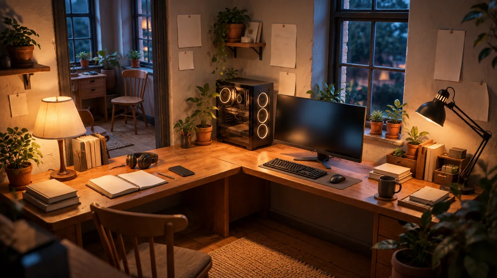
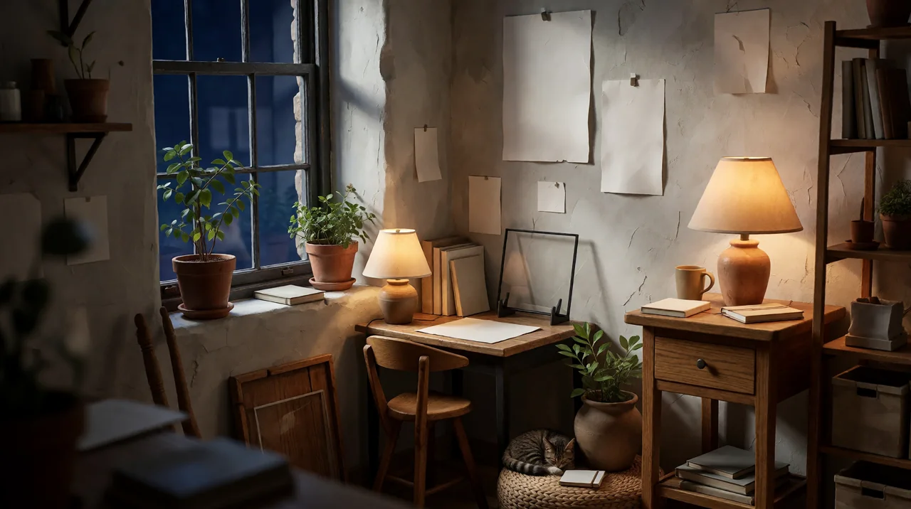

Hello. We’re ANVA.
A little studio.
A lot of
curiosity.
Built around creativity and the simple joy of making things we wish existed.

Our story
Follow the
interesting idea.
ANVA is a tiny independent, AI-assisted studio. Our adventures can lead anywhere: useful everyday software, thoughtful creative tools, games, experiments, books, and wonderfully unnecessary little ideas.
There’s no grand plan to fit everything into one category. If an idea feels useful, interesting, playful, or just too good to leave sitting in a conversation, we might turn it into something real.
We build what we’d want to use, make it with care, and then move on to the next adventure.
AI is part of our process.
We use AI openly to explore ideas, solve problems, write and refine code, and experiment. It’s one of the tools that makes ANVA possible. The ideas, decisions, and care we put into the finished work are ours.

How we work
Care extends to
your control.
We prefer products that respect the people using them. Where a tool can work locally, without unnecessary cloud dependence or data collection, that’s the direction we want to take.
Privacy, user control, and sensible defaults belong in the design itself. Each product has its own needs; we make those choices carefully, and explain them clearly.